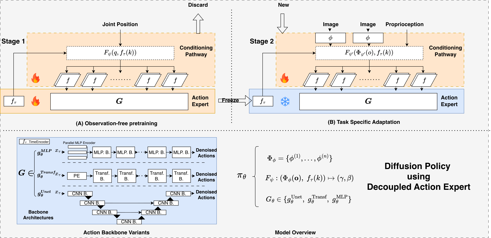
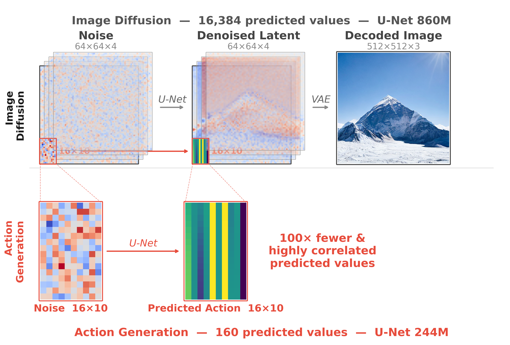
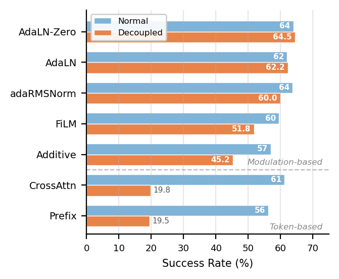

Many recent Vision-Language-Action models employ diffusion or flow-matching backbones with hundreds of millions of parameters for action generation. However, unlike image synthesis where the output spans millions of diverse pixels, a manipulation policy generates only short sequences of low-dimensional, physically correlated action values, a far simpler target that should not demand such capacity. We confirm this intuition and show that task-specific knowledge in these policies can be fully confined to the conditioning pathway, leaving the action backbone task-agnostic.
To establish this, we introduce a decoupled training recipe: a general-purpose action head is first pretrained on observation-free forward-kinematics data, then frozen while only the conditioning pathway is trained for downstream tasks. Using Diffusion Policy as a testbed, we show that on both MimicGen and LIBERO, a single frozen backbone shared across all tasks matches normally trained counterparts. This confirms that the action expert encodes little task-specific knowledge. Ablations show that the specific pretraining signal (joint positions, end-effector poses, or no conditioning at all) has no effect on downstream performance, indicating that the backbone learns only general trajectory structure. Pushing this finding further, we replace the 244M U-Net in Diffusion Policy with a 5M-parameter MLP backbone that matches or exceeds its performance, calling into question the large capacity budgets allocated to action generation in current VLA designs.
We propose a two-stage decoupled training recipe that separates the action backbone from task-specific conditioning:

Stage 1 — Pretrain: A general-purpose action expert is trained on observation-free forward-kinematics data, learning general trajectory structure without any task-specific information.
Stage 2 — Adapt: The pretrained action backbone is frozen, and only the conditioning pathway (which ingests visual observations and language instructions) is trained for downstream manipulation tasks.

We evaluate on MimicGen (8 manipulation tasks) and LIBERO (4 task suites), comparing normally trained policies against our decoupled approach with frozen backbones.
We ablate 7 conditioning mechanisms to understand which approaches survive backbone freezing.

@article{zhou2025decoupled,
title={Decoupled Action Expert: Confining Task Knowledge to the Conditioning Pathway},
author={Zhou, Jian and Lin, Sihao and Fu, Shuai and Li, Zerui and Zhou, Gengze and Wu, Qi},
journal={arXiv preprint arXiv:2511.12101},
year={2025}
}